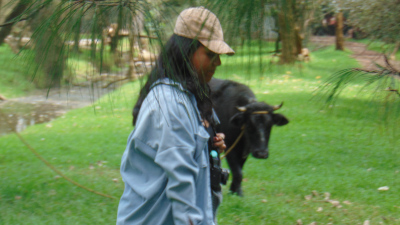
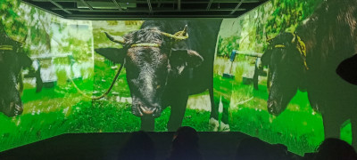
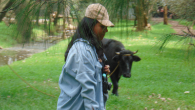
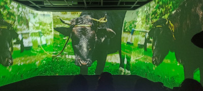
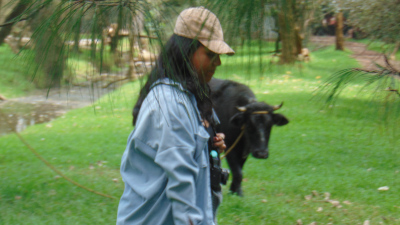
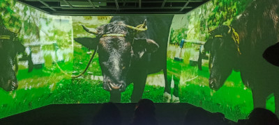

La obra “Su destino está en tu plato” expone el trato que llevan los animales ganaderos para que su carne llegue hasta tu plato.
En promedio cada año son sacrificadas 36 millones de ganado vacuno, esto mediante el aturdimiento y posteriormente la degollación.
En esta obra interactiva se aborda la teoría del especismo según Peter Singer hablando de esta selectividad de asesinato como una injusticia para los animales ganaderos, solamente para el consumo humano.
La instalación confronta al espectador con dos realidades posibles: una, en la que el asesinato y el maltrato animal están naturalizados; y otra, donde los animales son tratados con respeto y dignidad.
La experiencia propone que, a través de su participación, el espectador no solo observa, sino que encarna simbólicamente ese acto de violencia, dramatizándolo, haciéndolo presente desde la acción.

